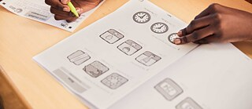

Где сдать экзамен
В России

Goethe-Zertifikat: с 12 сентября 2026 года в России не проводится.
Раньше экзамены Гёте можно было сдать примерно в 24 центрах по всей России. Сейчас партнёрские центры Гёте-Института прекратили приём экзаменов на неопределённый срок.
ÖSD – австрийский экзамен, его проводит Австрийский институт в Москве. Этот сертификат тоже признают в Германии.
TestDaF – список всех центров есть на официальном сайте экзамена, там же регистрация. Перед записью нужно проверить, есть ли центры в России на нужную дату.
telc – в России центров нет.
За границей
Многие едут сдавать экзамен в страны, куда не нужна виза. Это дешевле, чем ехать в Германию, и сам экзамен там стоит меньше.
- Казахстан – Гёте-Институт в Алматы, центры telc;
- Узбекистан – Гёте-Институт в Ташкенте, есть TestDaF;
- Грузия – Гёте-Институт в Тбилиси;
- Сербия – Гёте-Институт в Белграде, центры telc;
- Турция – Гёте-Институты в Стамбуле и Анкаре;
- Германия и Австрия – больше всего дат, но нужна виза и выше цены.
Что не забыть
- Записаться заранее, за 2–3 месяца.
- Узнать, как оплатить экзамен, потому что российские карты за границей не работают.
- Взять паспорт, который указывали при регистрации.
- Узнать, в какой день будет устная часть, иногда она на следующий день.